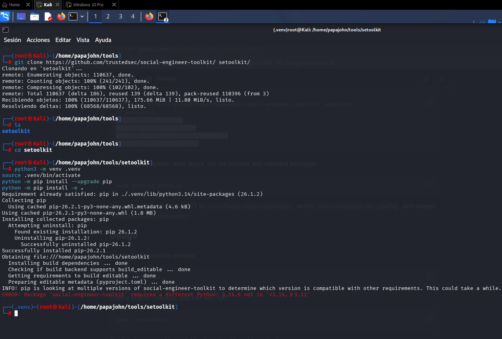
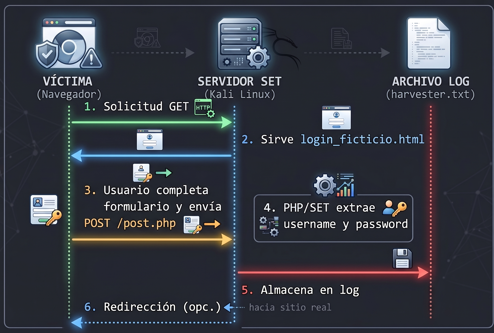

Univ. Politécnica de San Luis Potosí (UPSLP) | CNO IV Seguridad Informática | 7.º Semestre
Una página demasiado convincente
[ Credential Harvester Attack Method ]
Implementación y análisis, en un entorno de laboratorio controlado, de una simulación de ingeniería social mediante Social-Engineer Toolkit (SET), utilizando una página web ficticia para comprender el funcionamiento de una técnica de captura de información y reconocer los elementos que permiten identificar un intento de phishing.
00_Info General
| Campo | Detalle |
|---|---|
| Alumno | Manuel Darío Trejo Salazar (MDTS) |
| Asignatura | CNO IV — Seguridad Informática |
| Instructor | Servando López Contreras |
| Fecha | 28 de agosto de 2026 |
| Duración | 4 horas |
| Entorno | Laboratorio controlado — 2 VMs (Kali Linux + Windows 10) conectadas vía Tailscale |
| Objetivo | Configurar SET Credential Harvester para capturar credenciales de una página ficticia |
01_Objetivos
Al finalizar la actividad, el alumno deberá ser capaz de:
⚙️ Configurar SET
Configurar un escenario básico de ingeniería social utilizando Social-Engineer Toolkit (SET).
🌐 Implementar Página Ficticia
Implementar una página web ficticia mediante el módulo Credential Harvester.
📡 Analizar Flujo
Analizar el proceso mediante el cual la información del formulario es transmitida y registrada por el servidor.
🔍 Identificar IoC
Identificar indicadores técnicos y visuales que permitan reconocer una página potencialmente fraudulenta.
🛡️ Proponer Controles
Proponer controles de seguridad orientados a prevenir o reducir el impacto de ataques de phishing.
02_Descripción del Escenario
El área de seguridad informática de una organización ha recibido reportes de empleados que aseguran haber recibido un mensaje relacionado con una supuesta actualización de credenciales. El mensaje contiene un enlace que dirige a un portal aparentemente institucional.
La página incluye logotipo, campos de usuario y contraseña, y un mensaje indicando: "Su sesión ha expirado. Inicie sesión nuevamente para continuar."
A primera vista, nada parece fuera de lo común. Sin embargo, el portal no pertenece a la organización. Se trata de una página de phishing diseñada para capturar credenciales de acceso.
⚠️ Alcance del Laboratorio
Esta actividad se realiza exclusivamente en un entorno de laboratorio controlado. Queda prohibido utilizar páginas de servicios reales, clonar portales institucionales, utilizar credenciales personales, solicitar datos a terceros, publicar el servidor hacia Internet, usar dominios externos, implementar suplantación DNS, instalar payloads o ejecutar código malicioso.
03_Configuración del Laboratorio
Infraestructura
| Componente | Especificación |
|---|---|
| Sistema Operativo (Ataque) | Kali Linux (última versión estable) |
| Herramienta | Social-Engineer Toolkit (SET) v8.1.3 |
| Sistema Operativo (Víctima) | Windows 10 Pro |
| Conectividad entre VMs | Tailscale VPN (WireGuard) |
| IP Kali (Tailscale) | 100.70.51.71 |
| IP Windows (Tailscale) | 100.126.55.113 |
| Sitio Web Ficticio | index.html (login institucional genérico) |
Paso 1: Instalación de SET
Desde Kali Linux, se clonó el repositorio oficial de TrustedSec y se instaló en un entorno virtual de Python:
git clone https://github.com/trustedsec/social-engineer-toolkit/ setoolkit/ cd setoolkit python3 -m venv .venv source .venv/bin/activate python -m pip install --upgrade pip python -m pip install -e .

Paso 2: Inicio de SET
Se ejecutó la herramienta con privilegios de root:
sudo setoolkit

Paso 3: Conectividad Tailscale
Se verificó el estado de la VPN mesh entre ambas máquinas virtuales. Tailscale asigna IPs privadas fijas del rango CGNAT (100.64.0.0/10) y establece túneles directos cifrados vía WireGuard.


Paso 4: Creación del sitio web ficticio
Se creó una carpeta dedicada y el archivo index.html con un formulario de autenticación genérico. El atributo action del formulario apunta a la IP Tailscale de Kali para que SET capture los datos vía POST.


Paso 5: Configuración del ataque en SET
Secuencia de menús seleccionada:
1) Social-Engineering Attacks 2) Website Attack Vectors 3) Credential Harvester Attack Method 3) Custom Import


Configuración final:
| Parámetro | Valor |
|---|---|
| IP Address for POST back | 100.70.51.71 |
| Path to website | /home/papajohn/Documentos/carpetaindex/ |
| URL de referencia | http://www.ingreso.com (genérica) |

04_Evidencias del Ataque Simulado
Desde la máquina víctima (Windows 10)
Se accedió desde el navegador Firefox a la IP Tailscale del servidor atacante. La víctima visualiza un portal institucional con mensaje de sesión expirada e ingresa credenciales de prueba.

Captura de credenciales en Kali
SET intercepta la petición POST y extrae los campos del formulario en tiempo real:

Redirección post-captura
Se configuró el redireccionamiento del harvester hacia Wikipedia para simular el comportamiento de un ataque real que oculta sus huellas.

05_Explicación del Flujo de Captura
¿Qué es un Credential Harvester?
Un Credential Harvester (cosechador de credenciales) es un componente de SET diseñado para capturar información de autenticación introducida por una víctima en un formulario web controlado por el atacante. Su función dentro de una campaña de phishing es:
- Servir una página de autenticación que simula un portal legítimo.
- Interceptar los datos enviados por el formulario mediante el método HTTP POST.
- Registrar y exfiltrar la información hacia el servidor controlado por el atacante.
- Redirigir a la víctima (opcionalmente) hacia un sitio legítimo para evitar sospechas.
Diagrama de flujo

Secuencia técnica
| Etapa | Descripción |
|---|---|
| 1. Solicitud GET | El navegador de la víctima solicita la página al servidor SET. |
| 2. Respuesta HTML | SET sirve index.html con el formulario de login. |
| 3. Envío de credenciales | La víctima completa el formulario y envía POST a /post.php. |
| 4. Procesamiento | SET intercepta la petición POST y extrae los parámetros username y password. |
| 5. Almacenamiento | Los datos se muestran en terminal y se guardan en harvester_*.txt. |
| 6. Redirección | SET redirige al usuario al sitio configurado (Wikipedia). |
06_Controles de Seguridad Propuestos
| Control | Descripción |
|---|---|
| Autenticación Multifactor (MFA) | Requiere un segundo factor (token, biometría, app) además de la contraseña. |
| Filtrado de URLs (Proxy/Web Gateway) | Bloquea dominios sospechosos o no categorizados. |
| DNS Seguro (DNSSEC/DoH) | Previene envenenamiento de DNS y redirecciones maliciosas. |
| Certificados SSL/TLS válidos | Los sitios legítimos utilizan HTTPS con certificados válidos. |
| Análisis de correo (SEG) | Filtra correos con enlaces sospechosos o dominios similares (typosquatting). |
| Honeypots de credenciales | Detecta uso de credenciales "señuelo" en sistemas reales. |
Indicadores de compromiso (IoC) visuales
- URL con dirección IP directa en lugar de dominio reconocible.
- Conexión HTTP sin candado de seguridad (ausencia de HTTPS).
- Mensajes de urgencia excesiva ("Su sesión ha expirado", "Acción inmediata requerida").
- Errores ortográficos o diseño visual inconsistente con el portal original.
- Solicitud de credenciales en contextos inusuales o no solicitados.
07_Conclusión
La actividad demostró que el módulo Credential Harvester de SET permite capturar credenciales en tiempo real al servir una página web ficticia que explota la confianza del usuario, confirmando que la prevención efectiva contra el phishing requiere combinar capacitación, autenticación multifactor y verificación técnica de URLs y certificados.
08_Referencias
- Kennedy, D. (s. f.). The Social-Engineer Toolkit (SET) [Software]. TrustedSec. https://github.com/trustedsec/social-engineer-toolkit
- National Institute of Standards and Technology. (2021). Phishing. NIST. https://www.nist.gov/itl/smallbusinesscyber/guidance-topic/phishing
- National Institute of Standards and Technology. (2024). Cybersecurity Framework 2.0. NIST. https://www.nist.gov/cyberframework
- Offensive Security. (2026). set | Kali Linux Tools. Kali Linux. https://www.kali.org/tools/set/
- TechTarget. (2024). How to use Social-Engineer Toolkit. SearchSecurity. https://www.techtarget.com/cybersecurity/tutorial/How-to-use-Social-Engineer-Toolkit
09_Documentación Completa
Descarga el informe completo de la actividad en formato PDF:
⚠️ Declaración de Uso Responsable
El material presentado tiene como único propósito la formación académica en ciberseguridad. Su ejecución debe limitarse a entornos virtuales aislados, bajo supervisión docente y con el consentimiento explícito de todas las partes involucradas.